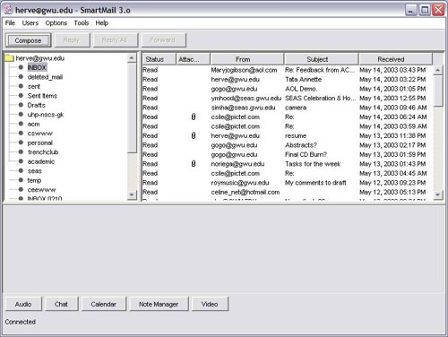
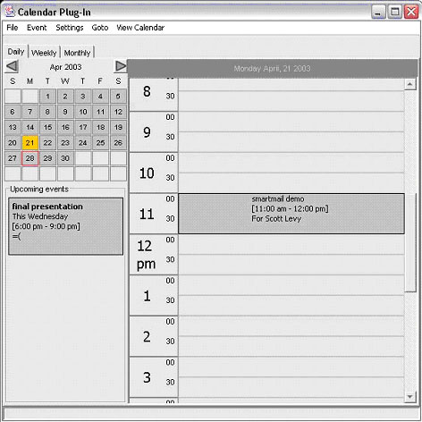

SmartMail 3.0:
This project involves the enhancement of the SmartMail engine and an e-mail client that is extendable through the use of new plug-ins and a modification of the previous SmartMail client architecture. A calendaring plug-in offers the ability to manage appointments and meetings and store in and store them within the internet mail account so that a users calendar may be accessed from anywhere; the user may also download other user's calendar so as to find easily set up meetings with his contacts. The plug-in also offers highly customizable recurrent event, event collision detection and drag and drop features. An auto reply plug-in allows users to create notes to be displayed on their contacts before they send an email so as to avoid redundant email exchange. The notes are stored on a webserver and are encrypted for . Instant communication plug-ins were also added : SmartMail 3.0 offers text chat, audio chat as well as video conferencing.

